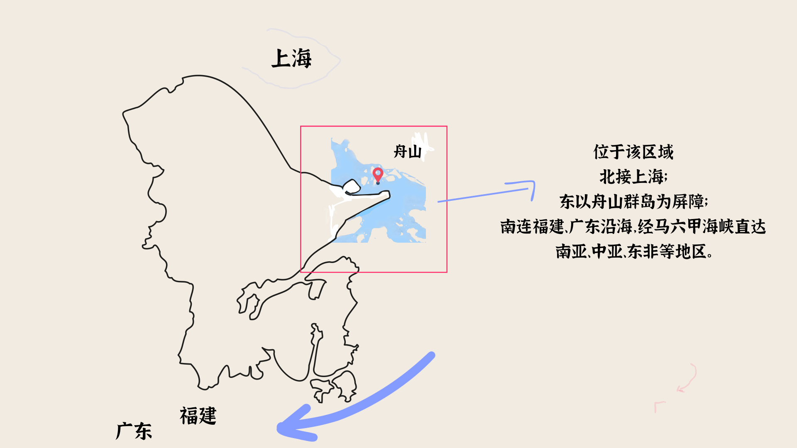
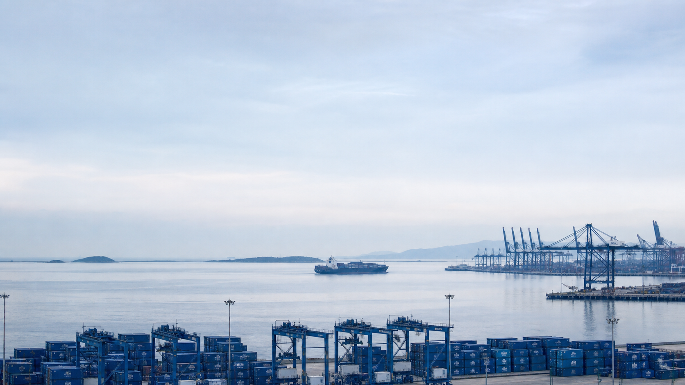
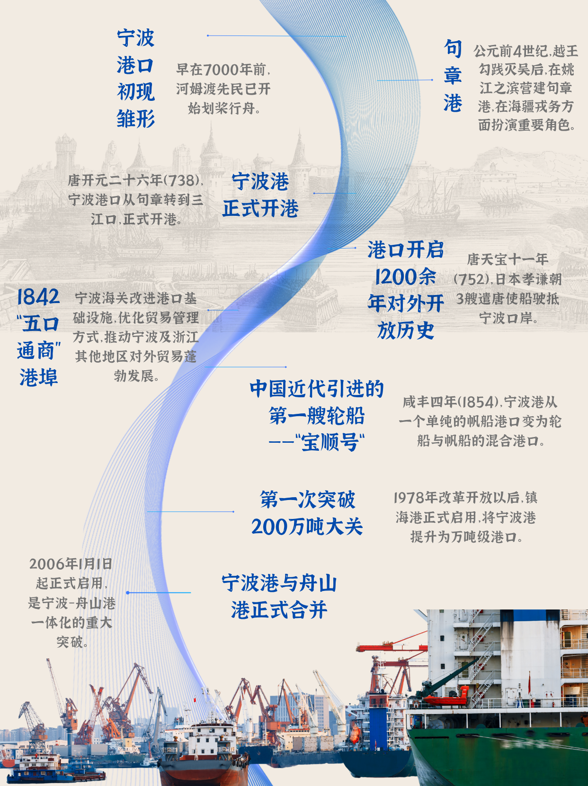
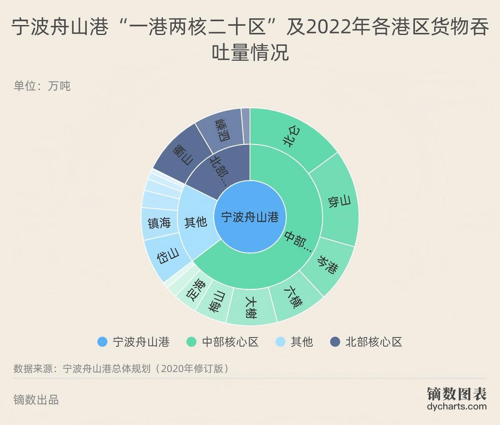
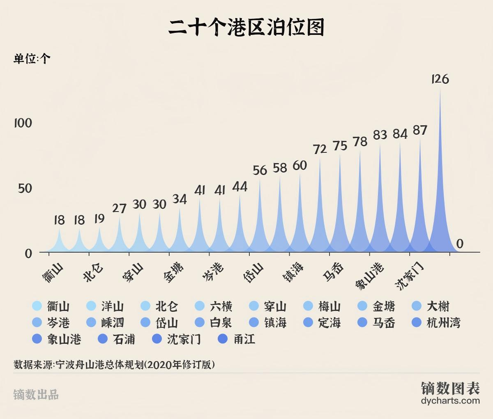
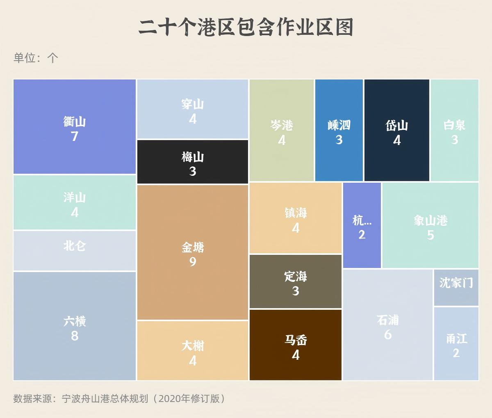
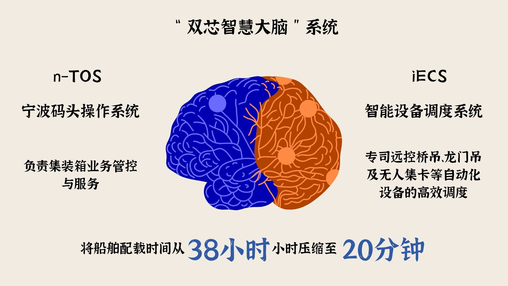
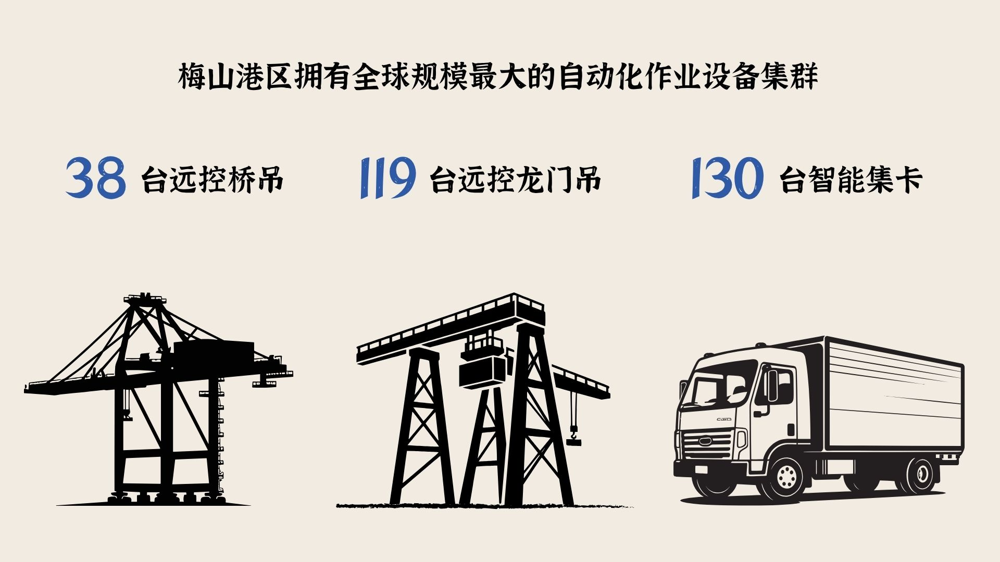
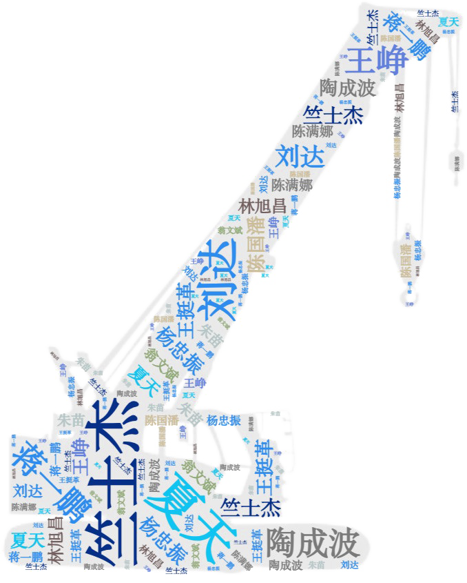
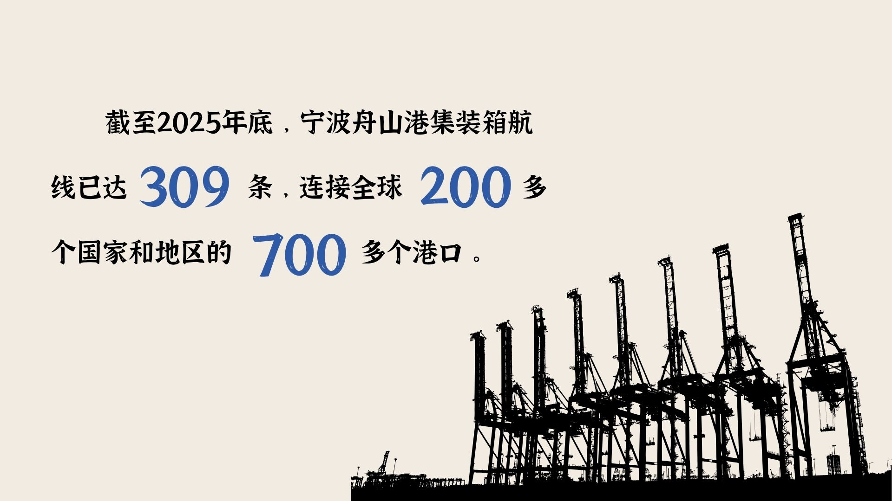

宁波舟山港
作为全球第一大货运港口和第三大集装箱枢纽港，地处长三角经济圈的核心交汇区域，是国家长江经济带南翼的战略支点。


跟随一只集装箱，从港区、码头与智慧系统出发，进入连接中国与全球市场的物流网络。
2026年1月，宁波舟山港发布数据显示：2025年港口完成货物吞吐量超过14亿吨，连续17年位居全球第一。
一座港口，如何承载如此巨量的流动？作为全球第一大货运港口和第三大集装箱枢纽港，地处长三角经济圈的核心交汇区域，是国家长江经济带南翼的战略支点。

从古代海上贸易港口、近代口岸，到改革开放后的深水港建设与两港一体化，每一次跃迁都与沿海开发和对外开放进程相互交织。

根据《宁波舟山港总体规划（2035年）》，“一港、两核、二十区”包括“一港”即宁波舟山港，“两核”为中部核心区（含北仑、大榭等9个港区）和北部核心区（含衢山、嵊泗等3个港区），在原有19个港区基础上新增杭州湾港区。

宁波舟山港现有生产泊位620多座，其中万吨级以上泊位超过200座，5万吨级以上大型、特大型深水泊位超过百座。大型深水泊位的集中布局，使超大型集装箱船、油轮和矿砂船能够在不同港区完成专业化装卸。

进入每一个港区后，还会进一步划分为多个作业区，分别承担装卸、堆存、中转、客运或产业配套等具体功能。

近五年来，宁波舟山港货物吞吐量始终在全国主要港口中保持领先。规模增长既来自大宗商品，也来自集装箱、海铁联运与国际航线网络的扩展。
岸桥吊装、集卡转运、堆场调度，再装船或装车。吞吐能力取决于岸桥、门机、龙门吊、集卡与输送系统能否构成连续作业链。
“双芯智慧大脑”一侧负责生产组织、资源配置与作业调度；另一侧负责安全监管、风险识别与运行监测。船舶、泊位、车辆、堆场和铁路数据在统一平台汇聚。

自动化岸桥完成装卸，无人驾驶集卡将箱体送往堆场，自动化龙门吊再完成堆存和转运。人员从高空、露天作业逐步转向远程控制与智能调度。


坚守、创新、精准、安全、协同与效率，是工程师和技术人员反复提及的关键词。
他们调整流程、优化设备参数，将一线经验转化为可复制的技术标准。


密集航线通达全球各大洲主要港口。港口影响力不只取决于吞吐量，也取决于目的地、运行频率及其嵌入全球航运网络的稳定程度。

海运与铁路通过一次申报、一次查验、一次放行高效衔接。“海上通全球、铁路达内陆”，让港口边界沿铁路向内陆延伸。

当铁路把数百乃至数千公里外的城市接入，港口便不再只是海上运输节点，而成为海陆联动的综合物流枢纽。
欧盟、美国及亚洲主要经济体长期位于主要贸易伙伴前列，映照着港口在全球航运网络中的稳定联系与外贸结构变化。
矿石、原油等大宗商品体量大、运距长，对深水泊位、专业码头、储运设施和航道条件提出更高要求，也是吞吐量保持高位的重要原因。
面向未来，宁波舟山港将进一步提高港口资源的集约利用水平。根据2023年通过联合评审的《宁波舟山港总体规划（修订）》，规划港口岸线减少4%，规划泊位增加50%，规划航道增加23%，规划锚地增加60%，清洁货种比例提升11个百分点。
一只集装箱的旅程，从码头驶向远方。
它的背后，是港区、泊位、机械、算法、铁路和全球航线共同构成的庞大系统。
从深水港建设到智慧码头，从海上航线到内陆铁路，宁波舟山港不断延伸着港口的空间边界。
下一次启航，这座港口还将把中国与世界连接到哪里？